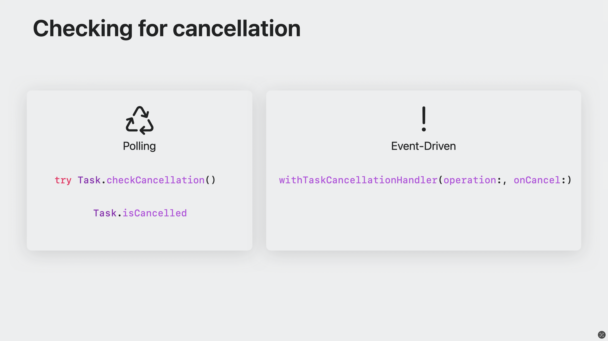

Task cancellation (отмена задачи)
Отмена задачи необходима для индикации о том, что приложению больше не нужен результат задачи.
В случае отмены, задача должна остановиться, вернув частичный результат или выдать ошибку.
Выполнение задачи можно представить как последовательность периодов, в течение которых она выполнялась. Каждый такой период заканчивается в точке приостановки await или завершает задачу. Такие периоды выполнения представлены экземплярами PartialAsyncTask:
typealias PartialAsyncTask = UnownedJob
https://github.com/apple/swift/blob/8f5980666de3b5c8a7fc6c1ec2891f7f8f91d03b/stdlib/public/Concurrency/PartialAsyncTask.swift#L16
Для взаимодействия с частичным результатом необходимо реализовать кастомный исполнитель (executor).
В примере с супом, мы может остановить приготовление, если клиент ушел, решил заказать пюрешку с котлеткой или пришло время закрыть кухню. Что может привести к отмене задачи ? В случае SC (структурированных задач), задачи отменяются неявно при выходе из области видимости, хотя мы можем вручную вызвать метод cancelAll() для группы задач TaskGroup, чтобы отменить текущие и будущие дочерние задачи.

В случае с неструктурированными задачи, отмена происходит явно с помощью метода cancel().

В результате, отмена родительской задачи приводит к отмене всех дочерних задач.
note
Отмена задач является кооперативной, поэтому дочерние задачи не останавливаются немедленно/мгновенно.
У каждой задачи существует состояние отмены: отменена или не отменена, под капотом это Bool тип данных. За это состояние отвечает свойство isCancelled. Обратите внимание, что не существует способа «отменить отмену».

Отмена задачи является гонкой.
Если задача была отменена до нашей проверки в блоке guard, то метод вёрнет ошибку SoupCancellationError.

Если задача была отменена после блока guard, выполнение функции продолжиться и начнется подготовление к приготовлению супа.

Для того, чтобы вернуть ошибку отмены вместо возвращения частичного результата, мы можем вызвать метод Task.checkCancellation(), который вернёт CancellationError если задача была отменена:
@_unavailableInEmbedded
public static func checkCancellation() throws {
if Task<Never, Never>.isCancelled {
throw _Concurrency.CancellationError()
}
}
@available(SwiftStdlib 5.1, *)
public struct CancellationError: Error {
// никаких дополнительный свойст, отмена должна быть легковесной
public init() {}
}

important
Очень важно проверить отмену задачи перед выполнением затратной работы.
Проверка на отмену является синхронным методом, поэтому любая функция, асинхронная или синхронная, реагирующая на отмену, должна проверить статус перед продолжением работы.
Отмена задачи с помощью isCancelled или checkCancellation полезна, когда задача запущена, но бывают случаи, когда вам нужно отреагировать на отмену, но задача в данный момент приостановлена и никакой код не выполняется, например при реализации AsyncSequence. В таком случае будет полезным использовать withTaskCancellationHandler.
@_unsafeInheritExecutor // the operation runs on the same executor as we start out with
@available(SwiftStdlib 5.1, *)
@backDeployed(before: SwiftStdlib 5.8)
public func withTaskCancellationHandler<T>(
operation: () async throws -> T,
onCancel handler: @Sendable () -> Void
) async rethrows -> T {
// unconditionally add the cancellation record to the task.
// if the task was already cancelled, it will be executed right away.
let record = _taskAddCancellationHandler(handler: handler)
defer { _taskRemoveCancellationHandler(record: record) }
return try await operation()
}
Для большего понимания, ниже на схеме изображены 2 сценария, при котором использовать тот или иной способ отмены.
